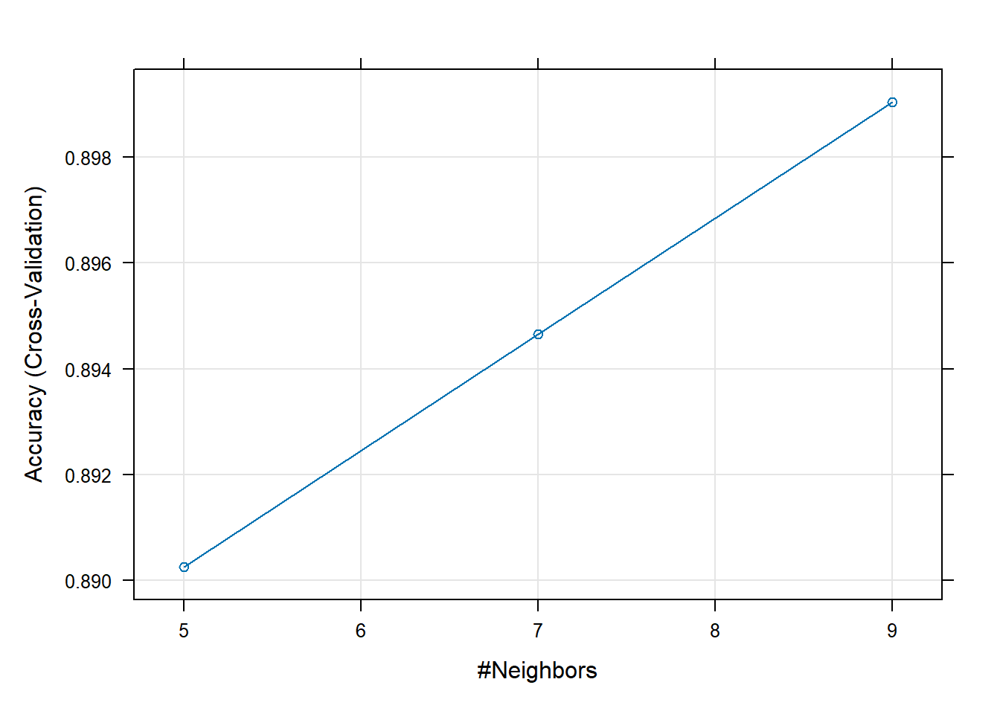
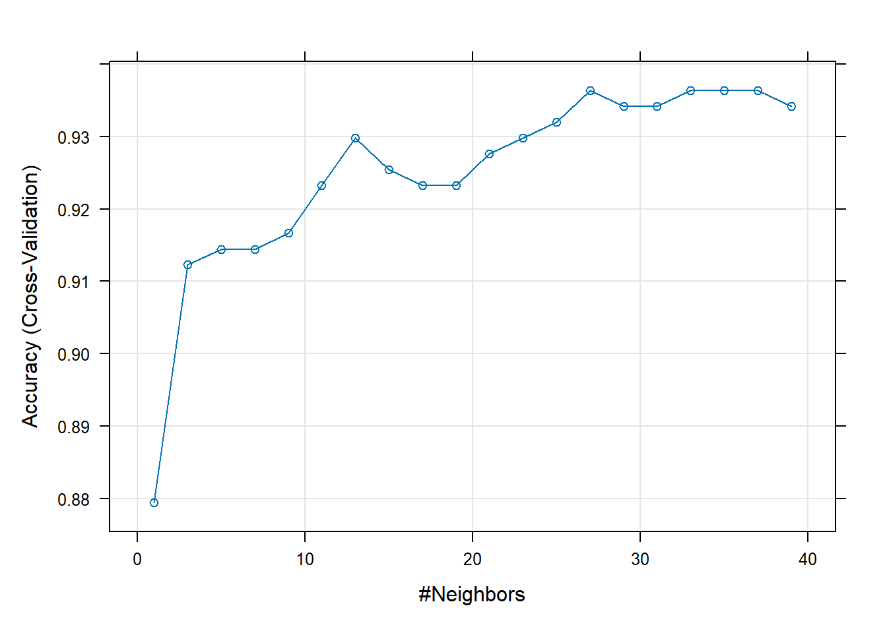

12 Model training and hyperparameter tuning
12.1 Concept of train set, test set, validation set and cross validation
- The training set is the dataset that we employ to train our model. It is this dataset that our model uses to learn any underlying patterns or relationships that will enable making predictions later on.
- The test set is used to approximate the models’s true performance in the reality. It is the final step in evaluating our model’s performance on unseen data.
- The validation set uses a subset of the training data to provide an unbiased evaluation of a model. The validation data set contrasts with training and test sets in that it is an intermediate phase used for choosing the best model and optimizing it. It is in this phase that hyperparameter tuning occurs.
- Cross-validation is a statistical method used to estimate the performance (or accuracy) of machine learning models. In cross-validation, you make a fixed number of folds (or partitions) of the data, run the modelling process on each fold, and then average the overall error estimate.
12.2 Model training
Model training is the process of teaching a machine learning algorithm to learn patterns and relationships in data by adjusting its parameters based on the provided training dataset.
To train the model we will use the package caret.
#import libraries
library(tidymodels)
library(caTools)
library(caret)
#load the data
#breast_cancer <- read.csv("data/Breast_cancer_data.csv")
#transform the target variable to factor
breast_cancer$diagnosis <- as.factor(breast_cancer$diagnosis)
# fixing the observations in training set and test set
set.seed(123)
# splitting the data set into ratio 0.80:0.20
split <- caTools::sample.split(breast_cancer$diagnosis, SplitRatio = 0.80)
# creating training dataset
trainingSet <- subset(breast_cancer, split == TRUE)
# creating test data set
testSet <- subset(breast_cancer, split == FALSE)
#train the KNN model
default_knn_mod = train(
diagnosis ~ .,
data = trainingSet,
method = "knn",
trControl = trainControl(method = "cv", number = 5)
)
plot(default_knn_mod)
12.3 Hyperparameter tuning
Hyperparameter tuning is the process of selecting the optimal set of hyperparameters for a machine learning model.
#tuning hyperparameters of the KNN model
tune_knn_mod = train(
diagnosis ~ .,
data = trainingSet,
method = "knn",
trControl = trainControl(method = "cv", number = 5),
preProcess = c("center", "scale"),
tuneGrid = expand.grid(k = seq(1, 40, by = 2))
)
plot(tune_knn_mod)
12.4 Model evaluation
Model evaluation is the process of assessing the performance and effectiveness of a machine learning model on unseen data. It involves various techniques and metrics to measure how well the model generalizes to new observations.
#predictions on the test set for the first model
model_pred <- predict(default_knn_mod, newdata = testSet)
#confusion matrix for the fist model
cm <- table(model_pred,testSet$diagnosis)
cm
#>
#> model_pred 0 1
#> 0 26 1
#> 1 16 70
#predictions on the test set for the second model
model_pred_tune <- predict(tune_knn_mod, newdata = testSet)
confusion_matrix <- table(model_pred_tune,testSet$diagnosis)
confusion_matrix
#>
#> model_pred_tune 0 1
#> 0 31 0
#> 1 11 71
#Calculate the accuracy
calc_acc <- function(data) {
data <- as.data.frame(data)
max_accuracy_index <- which.max(data$Accuracy)
row_with_max_accuracy <- data[max_accuracy_index, ]
return(row_with_max_accuracy$Accuracy)
}
print(paste("The accuracy of the simple model is:", calc_acc(default_knn_mod$results)))
#> [1] "The accuracy of the simple model is: 0.899044433827042"
print(paste("The accuracy of the tuned model is:", calc_acc(tune_knn_mod$results)))
#> [1] "The accuracy of the tuned model is: 0.936359292881032"